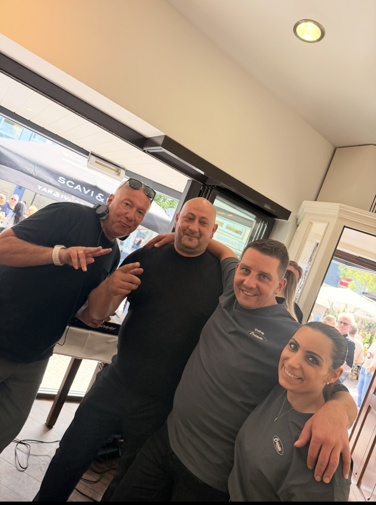
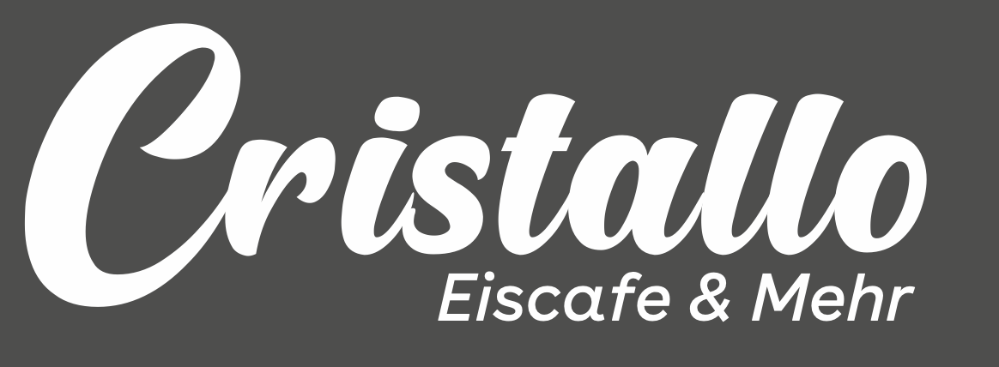
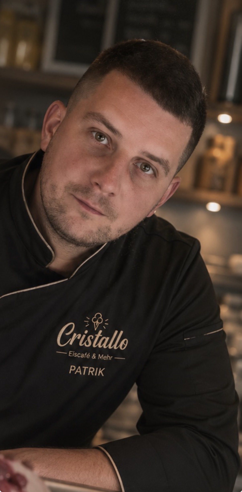

Events
Eröffnungsparty & besondere Momente.
Einblicke in unsere Events bei Cristallo – modern, gemütlich und mitten in Gießen.





27.06 Day Drinking Outdoor ab 14 Uhr · Neuenweg 7, GießenEiscafé & Mehr in Gießen
Panini, Burger, Wraps, Kaffee und Drinks – mitten in Gießen.
Echte Handwerkskunst
Unser Eismann Patrik sorgt seit mehr als 18 Jahren mit seinem geheimen Rezept nach original italienischer Rezeptur für genussvollen Eisgeschmack.
Tradition, Qualität und echter Geschmack – dafür steht Cristallo Gießen.
Speisekarte ansehen
Hausgemachte Eisvariationen und besondere Cups.
🥪Italienisch, frisch und perfekt für zwischendurch.
🍔Herzhaft, frisch und mit hausgemachtem Charakter.
🌯Leicht, lecker und frisch zubereitet.
Atmosphäre
Bei Cristallo genießen Sie in einem hochwertigen Ambiente mit klarer Linie, warmem Licht und italienischem Gefühl.
Events
Einblicke in unsere Events bei Cristallo – modern, gemütlich und mitten in Gießen.

Speisekarte
Entdecken Sie Eisbecher, Panini, Burger, Wraps, Kaffeespezialitäten, alkoholfreie Getränke, Bier, Wein und Drinks.
PDF-Speisekarte öffnen